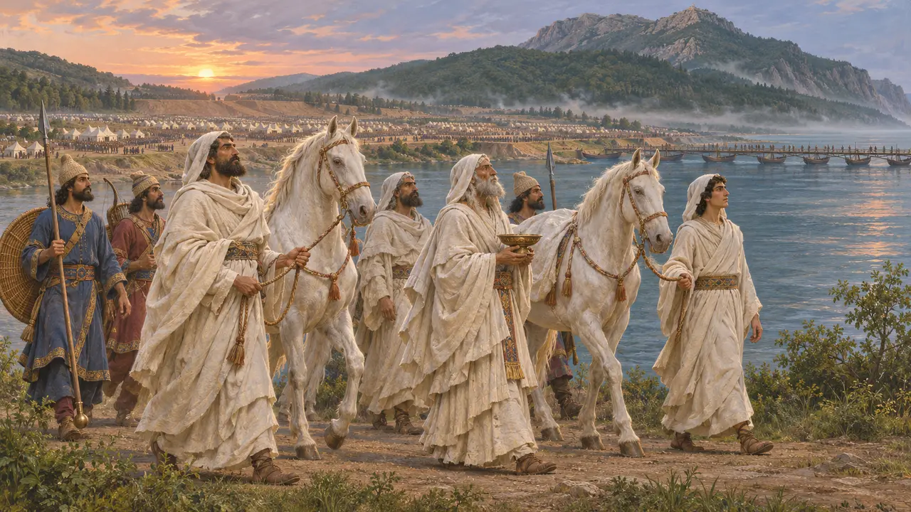
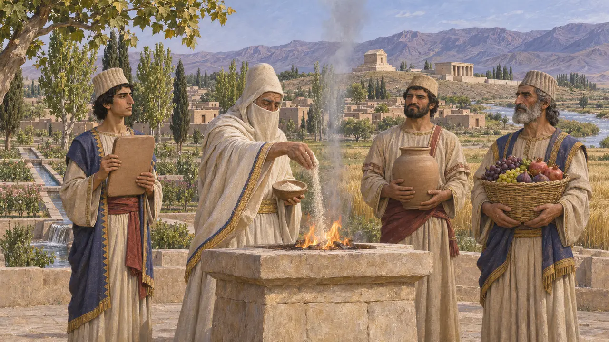
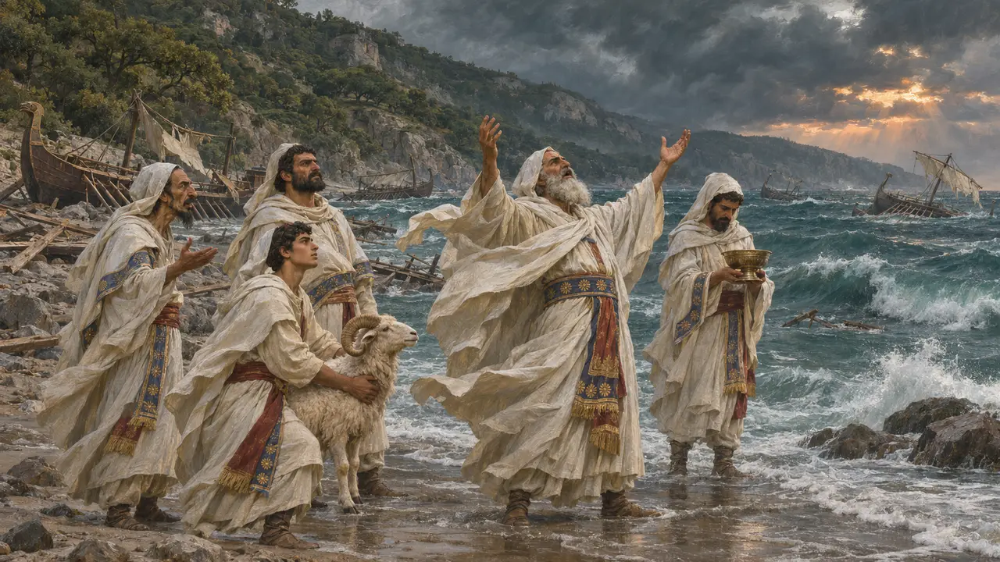
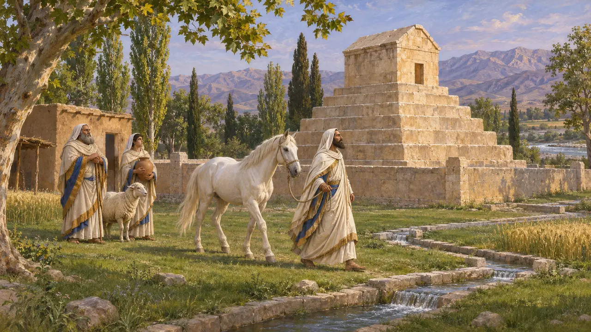

Enzyklopädie › Gods and feasts

The Magi
Priests, dream-readers, and a rival for the throne
No Persian sacrifice was lawful without a magus, Herodotus says. The Persepolis tablets show them on the King's payroll. Darius's rival for the throne was one, and the Persians kept a yearly day for killing them.
Im Spiel: Magi walk from the Sanctuary, the Altar of the Magi and the Lodge in their white felt hoods, and lead the Persian rites.

A Median tribe
Antiker BerichtHerodotus lists the Magi among the six tribes of the Medes, and says no sacrifice happens without one, who stands by and sings a theogony. They read dreams for Astyages and for Xerxes. They kill anything with their own hands, he says, except a dog or a man, and they make a contest of killing ants and snakes.
Herodotus 1.101, 1.107, 1.132, 1.140, 7.19

On the King's books
Zeitgenössisch belegtThe Fortification tablets name magi (makush in Elamite) as officiants who draw rations for the lan offering. They also use a plain Elamite word for priest, shatin, far more often. Magi are not a Persian church: they are one kind of paid religious specialist among several, working for several gods.
Persepolis Fortification tablets; Iranica, "Magi"

Gaumata and the Magophonia
Antiker BerichtDarius says Gaumata the magus took the throne by claiming to be Cyrus's son, and that he killed him. Herodotus adds that the Persians killed every magus they could find that day, and keep the day as a great feast when no magus may show himself. Modern historians often suspect Darius's story is a cover for killing the real heir.
Behistun, DB 11-14; Herodotus 3.61-79

Keepers of the tomb
Antiker BerichtMagi guarded Cyrus's tomb at Pasargadae, father to son, drawing a sheep each day, flour and wine, and a horse each month to sacrifice to him. Alexander's men found the guardians still there, and tortured them over the tomb's robbery.
Arrian, Anabasis 6.29
Quellen
- Herodotus
- Behistun inscription
- Persepolis Fortification tablets
- Arrian, Anabasis 6.29
- Encyclopaedia Iranica, "Magi"